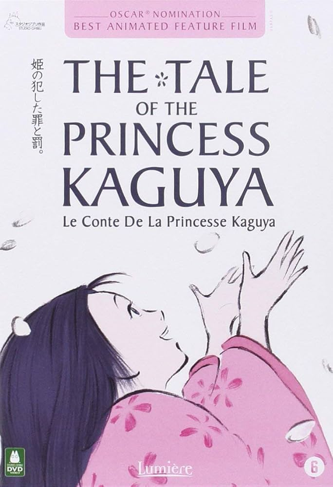
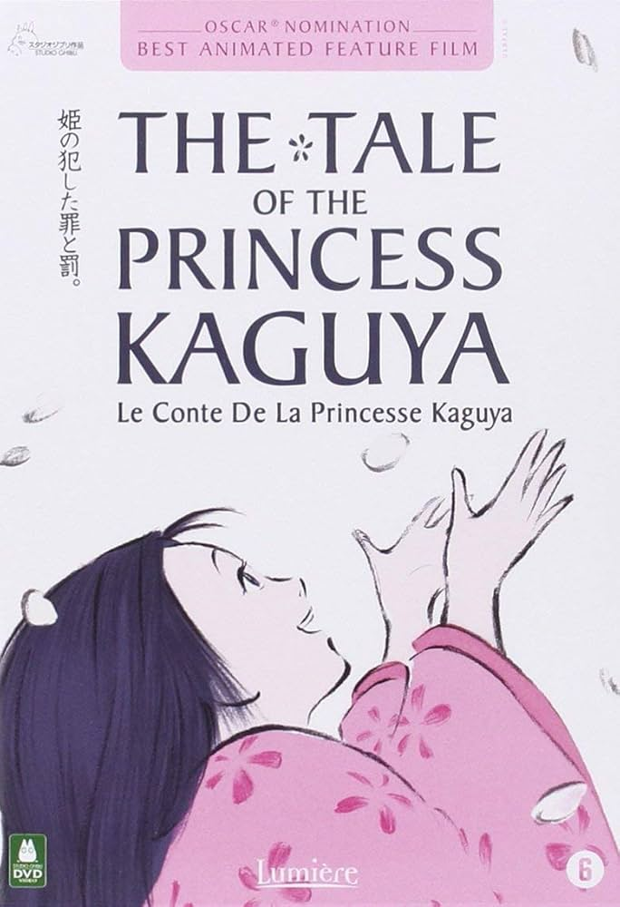

Mejores Peliculas
El Viaje de Chihiro
Dirigida por Hayao Miyazaki, esta película es considerada una obra maestra de la animación. Ganó un Oscar a la Mejor Película de Animación. La historia sigue a una niña llamada Chihiro que debe navegar por un mundo de espíritus para rescatar a sus padres. Es conocida por su imaginación desbordante, personajes memorables y profunda narrativa sobre el crecimiento y la resiliencia.
Ver
La Princesa Mononoke
Otra joya de Miyazaki, esta película aborda temas ambientales y la lucha entre la naturaleza y la industrialización. La princesa Mononoke es una guerrera que lucha por proteger su bosque de los humanos destructivos. Su animación detallada, trama madura y mensaje poderoso la han hecho un clásico intemporal.
Ver
Mi Vecino Totoro
Este encantador cuento narra las aventuras de dos hermanas que se mudan al campo y se hacen amigas de un espíritu del bosque llamado Totoro. La simplicidad y calidez de la historia, junto con sus personajes icónicos, la convierten en una película querida por audiencias de todas las edades.
Ver
El Increíble Castillo Vagabundo
Basada en la novela de Diana Wynne Jones, esta película de Miyazaki sigue a Sophie, una joven que se convierte en una anciana por un hechizo y busca ayuda en un mago llamado Howl. La película destaca por su impresionante animación, complejos personajes y la exploración de temas como la guerra y la autoaceptación.
Ver
Ponyo
Dirigida por Hayao Miyazaki y estrenada en 2008, cuenta la historia de una pequeña pez llamada Ponyo que desea convertirse en humana después de hacerse amiga de un niño llamado Sōsuke. Aquí hay algunas razones por las que "Ponyo" es destacada y tiene un fuerte mensaje sobre la importancia de la naturaleza y el equilibrio ecológico.
VerNausicaä del Valle del Viento
Aunque técnicamente fue producida antes de la fundación oficial de Studio Ghibli, esta película es considerada una de sus obras fundamentales. Sigue a Nausicaä, una princesa que lucha por salvar su mundo post-apocalíptico. La película es aclamada por su fuerte protagonista femenina, mensaje ambiental y rica imaginación.
Ver